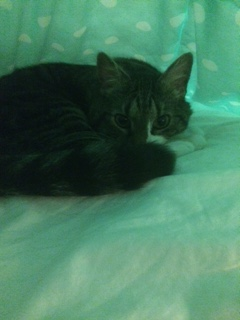

My Pets
Meet the Boys!

My family got Paco about eight years ago and he’s around 13 years old. We found him on Craigslist where his previous family was moving and didn’t want him anymore so my mother had to save him. He’s clinically overweight and not that smart but we love him anyway. We often refer to him as our "broken old man" due to his messed up tailbone that makes him sit funny and hop up stairs with his back legs together. Here is a link about broken cats like Paco.